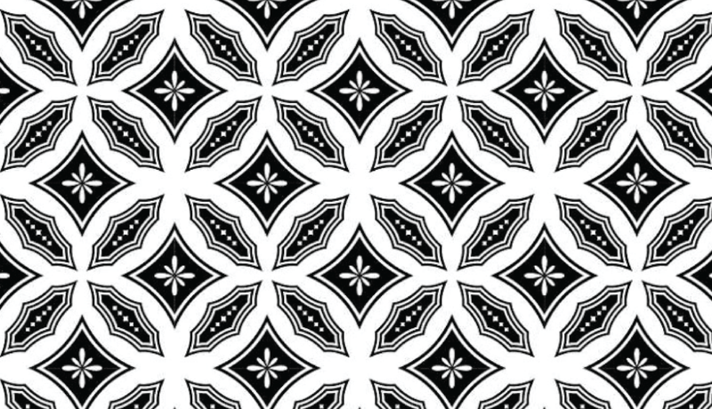
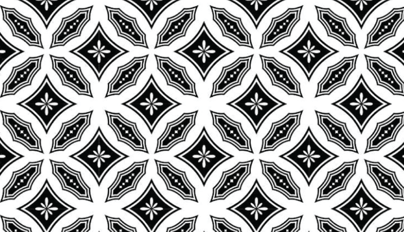
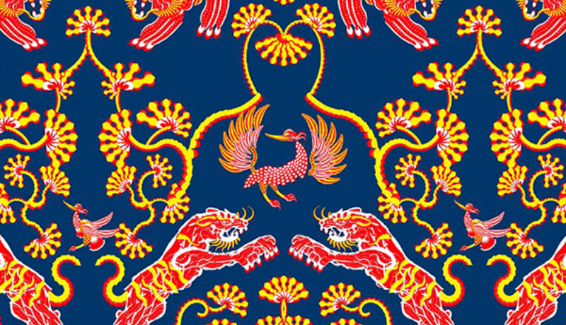
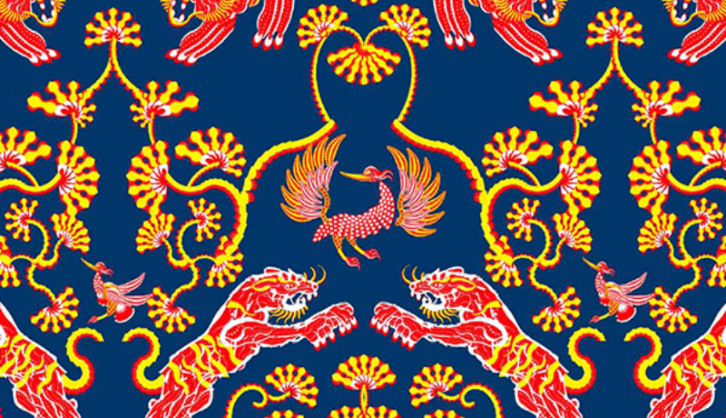
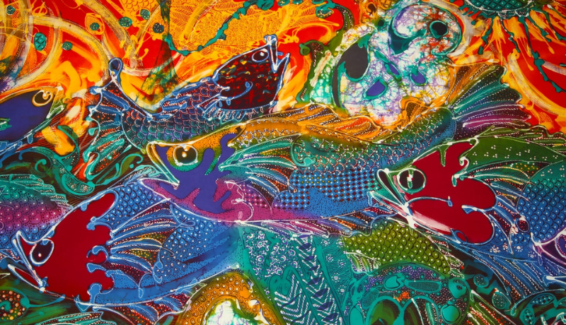
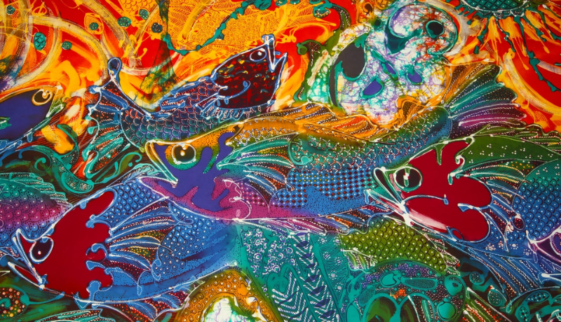

Batik Parang
Batik Parang adalah motif tertua asal Jawa yang mempunyai makna tidak pantang menyerah. Motif batik ini seperti ombak mengibaratkan ombak laut yang tidak akan berhenti bergerak seperti semangat yang pantang menyerah. Ada sekitar enam motif Parang, yaitu Parang Rusak, Parang Barong, Parang Kusumo, Parang Kecil, Parang Slobog dan Parang Klitik.

 


 

 
